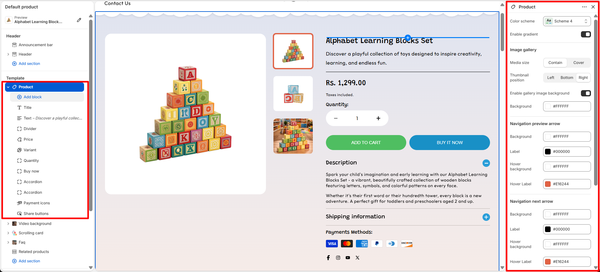
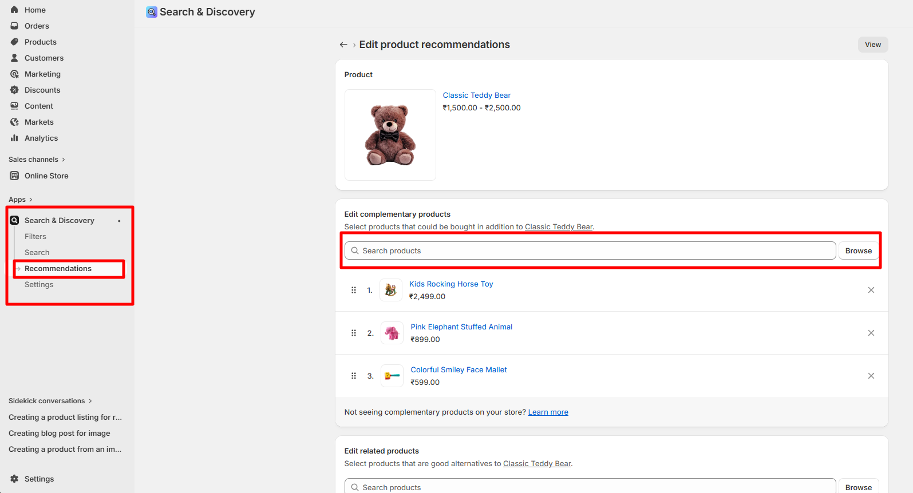
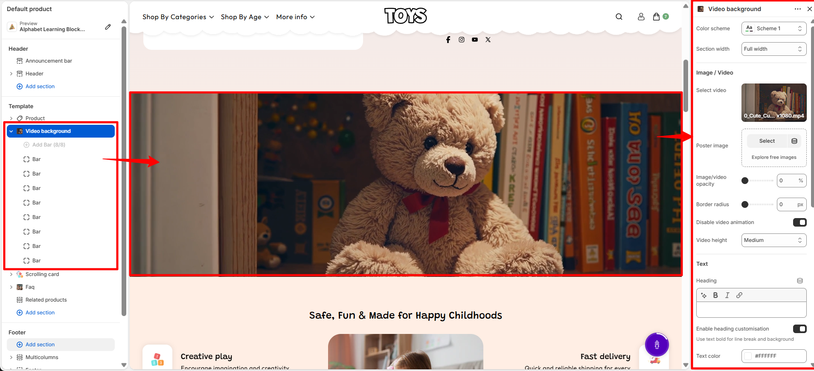
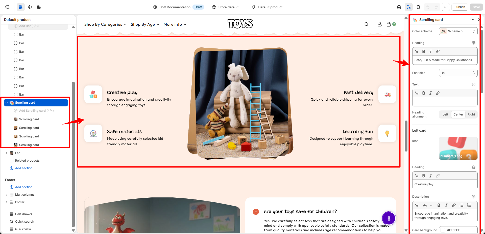
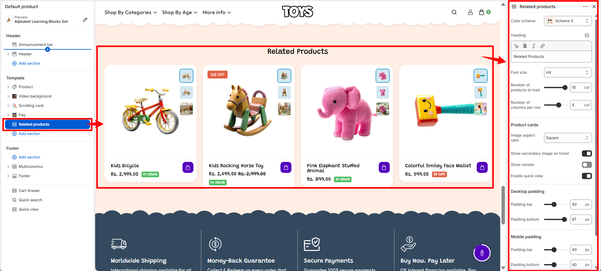
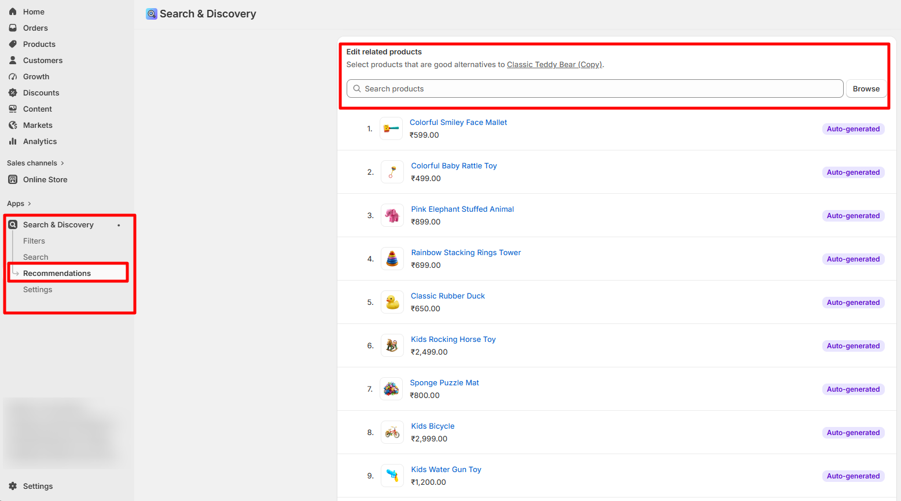

Product Page
The Product Page is one of the most important pages in your Shopify store, as it presents a single product along with all the essential information customers need before making a purchase. In the Aspire theme, the product page is designed to highlight your product with a clean layout, high-quality media, and well-structured details that help customers easily understand the product and make confident buying decisions.
This page includes a product media gallery, product title, vendor name, pricing details, SKU, and a detailed product description. Customers can also select product variants such as size or color, check inventory availability, adjust the quantity, and add the item to their cart directly from this page. Additional blocks such as pickup availability, trust badges, complementary products, collapsible information tabs, and social share buttons can be enabled to enhance the shopping experience and provide more useful information to your customers.
How to Configure the Product Page
Steps
- From your Shopify admin, go to Online Store → Themes.
- Click Customize on the Aspire theme.
- In the Theme Editor, use the page selector dropdown and choose Products → Default product.
- From the left sidebar, select the Product section to access the product page settings.
- Add, remove, or rearrange product blocks such as Title, Price, Variant Picker, Inventory, and Add to Cart according to your store’s needs.
- Adjust the section settings and layout options available on the right panel.
- Click Save to apply your changes.
Product
The Product Information contains all the essential blocks that display details about a product. These blocks help customers understand the product, view important details, select variants, and complete their purchase easily.
How to configure Product Information
- Color Scheme: Choose from predefined color schemes to control the background, text, and accent colors of the section.
- Enable Gradient: Enable or disable the gradient effect for the section background styling.
- Image Gallery: Customize the product image gallery display settings.
-
Media Size: Choose how the product media is displayed:
- Contain: Display the complete image within the gallery area without cropping.
- Cover: Fill the gallery area while cropping parts of the image if required.
-
Thumbnail Position: Select the position of product image
thumbnails:
- Left: Display thumbnails on the left side of the main image.
- Bottom: Display thumbnails below the main image.
- Right: Display thumbnails on the right side of the main image.
- Enable Gallery Image Background: Add a background behind the product gallery images.
- Background: Select the background color for the image gallery area.
-
Navigation Preview Arrow: Customize the appearance of the
previous image navigation arrow:
- Background: Set the arrow background color.
- Label: Set the arrow icon color.
- Hover Background: Set the background color when hovered.
- Hover Label: Set the icon color when hovered.
-
Navigation Next Arrow: Customize the appearance of the next
image navigation arrow:
- Background: Set the arrow background color.
- Label: Set the arrow icon color.
- Hover Background: Set the background color when hovered.
- Hover Label: Set the icon color when hovered.
-
Desktop Padding: Adjust the spacing of the section on
desktop devices:
- Padding Top: Set the top spacing of the section.
- Padding Bottom: Set the bottom spacing of the section.
-
Mobile Padding: Adjust the spacing of the section on mobile
devices:
- Padding Top: Set the top spacing of the section.
- Padding Bottom: Set the bottom spacing of the section.

Available Product Block
-
Vendor: Displays the name of the product’s brand or supplier on the product page,
helping customers easily identify the brand associated with the product.
-
Text Transform: Controls how the vendor name appears.
- Default: Shows the vendor name in its original format.
- Uppercase: Displays the vendor name in uppercase letters.
-
Color: Select the color style for the vendor text.
- Body: Uses the default theme text color.
- Highlight: Applies the highlight color to make the vendor name stand out.
-
Text Transform: Controls how the vendor name appears.
-
Title: Displays the name of the product prominently on the product page, helping
customers quickly identify the product they are viewing.
- Heading font weight: Controls the thickness of the product title text, allowing you to adjust how bold or prominent the title appears.
- Price: Displays the product’s pricing information on the product page, including the current price, compare-at price, and any discounts. This helps customers quickly see the product’s cost and any savings available.
- SKU: Displays the product’s Stock Keeping Unit (SKU) on the product page. This unique identifier helps both store owners and customers track and reference specific products efficiently.
-
Description: Shows the product’s detailed description on the product page, helping
customers understand the product features, benefits, and usage.
- Number of Lines to Show by Default: Controls how many lines of the product description are visible initially. Customers can expand to see the full description if it exceeds the set limit.
- Divider: Adds a visual divider between blocks on the product page. This helps organize content and improve readability by clearly separating different elements.
-
Variant Picker: Allows customers to choose between different product options such as
size, color, or material.
-
Options Type: Select how product variants are displayed:
- Button: Shows variants as clickable buttons, ideal for quick selection and visual clarity.
- Dropdown: Displays variants in a compact dropdown list, suitable for products with many options.
- Swatch Shape: You can change the shape of color swatches by going to Theme Settings → Swatches → Swatch Shape. This allows you to choose between round, square, or use default one.
- For more detil about swatches click on More
- For more details about swatches, refer to Shopify’s Option with swatches documentation .
- You can also refer to Adding color swatches using category metafields for advanced customization.
-
Options Type: Select how product variants are displayed:
-
Inventory: Displays the product’s stock availability status on the product page, helping
customers quickly understand product availability before purchasing.
- Stock Color: Select the color used to display the product availability message when the product is in stock.
- Out of Stock Color: Select the color used to display the availability message when the product is unavailable or out of stock.
- Low Stock Color: Select the color used to highlight products with limited inventory, encouraging customers to purchase before the stock runs out.
- Stock Threshold: Set the inventory quantity limit that determines when the low stock message should be displayed. For example, if the threshold is set to 5, products with 5 or fewer items remaining will show the low stock status.
- Store Pickup: Displays the availability of local pickup options for the product, allowing customers to check whether the item can be collected from a nearby store instead of being delivered.
- Share: Displays social sharing options on the product page, allowing customers to easily share the product with others through supported platforms.
- Payment Icons: Displays accepted payment method icons on the product page, helping customers quickly identify available payment options and build trust during the purchase process.
-
Size Chart: Displays a size guide on the product page, helping customers select the correct
size before purchasing.
- Title: Set the heading text for the size chart button or section.
- Size Chart Icon: Upload or select an icon to display alongside the size chart title.
- Desktop Image: Upload a size chart image optimized for desktop devices.
- Mobile Image: Upload a size chart image optimized for mobile devices.
- Select Page: Choose an existing page from your store to display as the size chart content.
- Link to a Product Option: Connect the size chart with a specific product option, such as size, to display the chart only for relevant products.
- Product Option Name: Enter the product option name that the size chart applies to, such as "Size" or "Dimensions".
- Quantity Selector: Allows customers to choose the number of items they want to purchase directly on the product page, making it easy to adjust quantities before adding products to the cart.
-
Add to Cart Button: Displays the primary action button on the product page, allowing
customers to add products to their cart.
- Show Dynamic Checkout Button: Enable this option to takes customers directly to the checkout page for faster purchase completion.
- Show Dynamic Checkout Button: Enable this option to display a Dynamic Checkout button,which lets customers skip the cart and go directly to the checkout page for a faster and smoother purchase experience.
-
Buy Now: Provides customers with quick purchase options
directly from the product page.
- Dynamic Checkout Button: Enable this option to display accelerated checkout buttons that allow customers to complete their purchase using available express payment methods.
- Gift Card Recipient Form: Enable this option to allow customers to add recipient details and send the product as a gift card.
-
Accordion: Displays collapsible content blocks that allow
customers to expand and view additional information.
- Heading: Add a title for the accordion section to introduce the content.
- Description: Add supporting text or a short explanation below the accordion heading.
- Content: Add the detailed information that will be displayed inside the accordion panel when expanded.
- Default Open: Enable this option to keep the accordion item expanded by default when the page loads.
- Icon Background: Choose the background color of the accordion icon.
- Icon Text: Select the color of the accordion icon or symbol.
-
Complementary Products: Displays related or recommended products that pair well with
the current product, encouraging additional purchases and enhancing the shopping experience.

- Heading: Set the title for this section, such as “Often purchase with!”, to introduce the recommended complementary products.
- Number of Products to Load: Controls how many complementary products are loaded in total (e.g., 3 products).
- Image Aspect Ratio: Select the shape of the product images, such as Square, to maintain consistent visual presentation.
- Scroller Color: Choose the color of the horizontal product scroller (e.g., #2A9ED9), which defines the active scroll indicator or highlight color.
- Go to your Shopify Admin and open the Apps section.
- Select the Search & Discovery app.
- Navigate to the Recommendations feature within the app.
- Search and select the products you want to add as complementary products.
- Add the selected products as complementary items.
- Click Save to apply your changes.
How to Add Complementary Products
Steps

-
Collapsible Tab: Adds a section with a collapsible tab on the product page to
organize content neatly and save space.
- Heading: Set the title for the tab, such as “Description” or any custom heading.
- Content: Add a short description or content that explains the heading or answers a question related to the product.
- Apply Top Border: Enable to add a border line above the tab content for visual separation.
- Apply Bottom Border: Enable to add a border line below the tab content for clearer division.
- Show Product Description: When enabled, the default product description is displayed inside this collapsible tab.
- Share: Displays social media icons on the product page, allowing customers to easily share the product on platforms like Facebook, Twitter, Instagram, and more. This helps increase product visibility and reach.
Video Background
The Video Background section allows you to create an engaging visual experience by displaying a video as the background of a section. This feature helps highlight important content, promotions, announcements, or brand messages with an immersive video presentation.
How to Configure Video Background
- Color Scheme: Choose a color scheme (such as Scheme 1) to control the background, text, and accent colors applied to the section.
-
Section Width: Select the width of the video background section.
- Full Width: Displays the video across the entire width of the screen.
Image / Video Settings
- Select Video: Choose the video file that will be displayed as the section background. For example, you can upload a video.
- Poster Image: Upload a fallback image that appears before the video loads or on devices where video playback is unavailable.
- Image/Video Opacity: Adjust the transparency level of the background media. Lower opacity values create a more visible overlay effect for the text displayed above the video.
- Border Radius: Control the roundness of the section corners. A value of 0 displays the video with square corners.
- Disable Video Animation: Enable this option to stop video animation effects and display the video without movement effects.
- Video Height: Select the height of the video background section. For example, Medium provides a balanced section height suitable for most layouts.

Text Settings
- Heading: Add the main heading text displayed over the video background.
- Enable Heading Customisation: Enable this option to customize the appearance and styling of the heading text.
- Use Text Bold for Line Break and Background: Use bold text formatting to create highlighted line breaks or background styling within the heading.
- Text Color: Select the color of the text displayed over the video. For example, #FFFFFF displays the text in white.
- Customisation Background Color: Choose a background color for customized text elements. For example, #FFFFFF applies a white background.
- Font Size: Select the heading font size. For example, H4 applies the H4 typography style.
- Text: Add supporting description text that appears below the heading.
Button Settings
- Button Label: Add the text displayed on the call-to-action button. For example, Shop Now or Explore Collection.
- Button Link: Add the destination URL where customers are redirected after clicking the button.
Layout Settings
-
Text Position: Choose the placement of text content over the video background.
- Center: Places the heading, text, and button in the center of the section.
Section Spacing
- Top Spacing: Adjust the empty space above the Video Background section.
- Bottom Spacing: Adjust the empty space below the Video Background section.
How Video Background Works
- The selected video is displayed as a background while text and buttons appear on top of it.
- The poster image ensures the section still displays correctly before the video loads.
- Text visibility can be improved by adjusting video opacity and text colors.
- The section can be used for hero banners, promotional content, product highlights, or brand storytelling.
Bar Block Settings
- Bar Block: helps you add and manage decorative background strips within the section. These strips can be used to enhance the visual appearance of your store, create separation between content areas, and maintain a consistent design throughout the page.
- Bar Color: Select the color of the decorative bar element displayed in the banner section.

Scrolling Card
The Scrolling Card section allows you to showcase multiple feature cards in a horizontally scrolling layout. This section is useful for displaying brand highlights, product benefits, services, or important information in an attractive and interactive way. Each card can include an icon, heading, description, and custom background color.
- Color Scheme: Choose a color scheme (such as Scheme 5) to control the background, text, and accent colors of the section.
- Heading: Add the main title displayed above the scrolling cards. For example, Exquisite Craftsmanship & Timeless Elegance.
- Font Size: Select the heading font size. For example, H4 applies the H4 typography style.
- Text: Add supporting text displayed below the main heading.
-
Heading Alignment: Choose the alignment of the heading and text.
- Left: Aligns the content to the left side.
- Center: Centers the content within the section.
- Right: Aligns the content to the right side.
- Card Icon: Upload an icon image for each card to visually represent the feature or benefit.
- Card Heading: Add a title for each scrolling card. Examples include Creative play, Safe materials, Fast delivery, and Learning fun.
- Card Description: Add supporting content that explains the feature or benefit shown in the card. For example, Discover timeless elegance with handcrafted fine jewellery.
- Card Background: Select a custom background color for each individual card. For example, #FFFFFF displays the card with a white background.
-
Desktop Spacing: Adjust the spacing around the section on desktop devices.
- Padding Top: Controls the space above the section.
- Padding Bottom: Controls the space below the section.
-
Mobile Spacing: Adjust the spacing around the section on mobile devices.
- Padding Top: Controls the top spacing on mobile screens.
- Padding Bottom: Controls the bottom spacing on mobile screens.
- Custom CSS: Add custom CSS code to modify the appearance and styling of the Scrolling Card section according to your requirements.

The Scrolling Card section automatically arranges multiple cards in a scrolling layout, allowing customers to explore different features or benefits in a compact and engaging format. It is ideal for showcasing product highlights, brand values, services, or promotional information.
Scrolling Card Block
- Scrolling Card Block: Add individual scrolling cards to the section. Each card block can be customized with its own image, heading, description, and background color.
- Image: Upload an image or icon that will be displayed inside the scrolling card. Images help visually represent the feature or information being highlighted.

FAQ
The FAQ section allows you to display frequently asked questions and answers in an organized layout. This section helps customers quickly find important information about your products, services, or policies, reducing confusion and improving the overall shopping experience.
- Color Scheme: Choose a color scheme (such as Scheme 5) to control the background, text, and accent colors of the FAQ section.
-
Section Width: Select the width of the FAQ section.
- Container Width: Displays the FAQ content within a limited container area for better readability.
- Section Border Radius: Adjust the roundness of the FAQ section corners. For example, a value of 20 creates rounded corners.
- Image: Upload an image that will be displayed alongside the FAQ content. Images can be used to make the section more visually engaging.
- Enable Clip Art: Enable this option to display decorative clip art elements with the FAQ section.
-
Aspect Ratio: Choose how the uploaded image is displayed.
- Adapt to Image: Automatically maintains the original image proportions.
-
Image Position: Choose where the image appears within the FAQ layout.
- Left: Displays the image on the left side of the section.
- Right: Displays the image on the right side of the section.
-
Text Alignment: Select the alignment of FAQ text content.
- Left: Aligns text to the left side.
- Center: Centers the text content.
- Right: Aligns text to the right side.
- Icon Background: Choose the background color of the FAQ icons. For example, #5400BC applies a purple icon background.
- Icon Text: Select the text color displayed inside the FAQ icons. For example, #FFFFFF displays white icon text.
- Icon Active Background: Choose the background color shown when an FAQ item is active or expanded. For example, #E16244 applies an orange active background.
- Icon Active Text: Select the text color displayed when an FAQ item is active. For example, #FFFFFF displays white active icon text.
-
Desktop Spacing: Adjust the spacing around the FAQ section on desktop devices.
- Padding Top: Controls the empty space above the section.
- Padding Bottom: Controls the empty space below the section.
-
Mobile Spacing: Adjust the spacing around the FAQ section on mobile devices.
- Padding Top: Controls the top spacing on smaller screens.
- Padding Bottom: Controls the bottom spacing on smaller screens.

The FAQ section uses expandable question-and-answer items, allowing customers to view answers only when needed. This keeps the page clean while providing easy access to important information.
Available Product Block
- Heading Block: Allows you to add the main heading for the FAQ section. This block is used to display the section title above the FAQ items.
- Heading: Add the main title displayed at the top of the FAQ section. For example, Frequently Asked Questions.
-
Font Size: Select the heading size based on your preferred typography style.
Available options include:
- H1: Displays the largest heading size.
- H2: Displays a large heading suitable for section titles.
- H3: Displays a medium-sized heading.
- H4: Displays a smaller heading style.
- H5: Displays a compact heading size.
- Color: Choose the color of the heading text. For example, #FFFFFF displays the heading in white.
- FAQ Block: Allows you to create individual FAQ question and answer items. Customers can click on each question to expand and view the related answer. Multiple FAQ blocks can be added to display different questions.
- Heading: Add the question displayed in the FAQ accordion item. For example, Are your diamonds and gemstones certified?.
-
Content: Add the answer or detailed information displayed when the FAQ item
is expanded.
You can provide helpful explanations, guidelines, or additional details related to the
question.
For example: Yes. We offer certified authentic diamonds and fine gemstones sourced ethically and crafted to the highest standards. with applicable safety standards. Our collection is made from quality materials and includes sizing guides and material specifications to help you choose the perfect jewellery piece. - Default Open: Enable this option to keep the FAQ item expanded by default when customers first visit the page. Disable it to keep the FAQ item closed until the customer clicks on it.
Heading Block

FAQ Block:

Related Products
The Related Products section displays products that are similar or connected to the product customers are currently viewing. This feature helps customers discover additional items, encourages product exploration, and increases opportunities for cross-selling. The section automatically loads related products based on the current product and displays them in a product card layout.
How to Configure Related Products
- Color Scheme: Choose a color scheme (such as Scheme 5) to control the background, text, and accent colors of the Related Products section.
- Heading: Set the title displayed above the product list, such as Related Products or any custom heading you prefer.
- Heading Font Size: Select the font size for the section heading. For example, H4 displays the heading using the H4 typography style.
- Number of Products to Load: Control how many related products are displayed in the section. For example, setting this value to 10 will load up to ten related products.
- Number of Columns per Row: Define how many product cards appear in a single row on desktop devices. For example, selecting 4 columns displays four products in each row.
Product Cards Settings
- Image Aspect Ratio: Select the shape of product images displayed inside product cards. For example, Square displays product images with equal width and height.
- Show Secondary Image on Hover: Enable this option to display an alternate product image when customers hover over a product card. This allows customers to view another product angle without opening the product page.
- Show Vendor: Enable this option to display the product vendor or brand name on product cards.
- Enable Quick View: Enable quick view functionality to allow customers to preview product details and add items to their cart without leaving the current page.

Section Spacing Settings
-
Desktop Padding: Adjust the spacing around the Related Products section on desktop
devices.
- Padding Top: Controls the empty space above the section.
- Padding Bottom: Controls the empty space below the section.
-
Mobile Padding: Adjust the spacing around the Related Products section on mobile
devices.
- Padding Top: Controls the spacing above the section on mobile screens.
- Padding Bottom: Controls the spacing below the section on mobile screens.
How Related Products Work
- The Related Products section automatically displays products connected to the current product.
- Products are selected dynamically based on Shopify's related product recommendations.
- The number of products shown depends on the Number of Products to Load setting.
- Customers can explore additional products directly from the product page, helping improve product discovery and increasing purchase opportunities.
How to Add Related Products
Steps
- Go to your Shopify Admin and open the Products section.
- Select the product for which you want to manage related products.
- Open the Search & Discovery app from your Shopify Admin.
- Navigate to the Recommendations section.
- Select the products you want to display as related products for the selected product.
- Add the selected products as related product recommendations.
- Click Save to apply the related product settings.

FAQs
Why are my product images not displaying correctly?
This usually happens when the image aspect ratio in the product section settings does not match the uploaded image size. Try adjusting the Image Aspect Ratio in the product page settings or upload images with consistent dimensions for the best display.
Why can't I see the Recently Viewed products?
Recently viewed products only appear after a customer has browsed multiple products in the store. If you are testing the feature, open a few different product pages and then return to a product page to see the section populate automatically.
Can I change the order of blocks on the product page?
Yes. In the Theme Editor, open the product template and simply drag and drop the blocks in the left sidebar to rearrange them in the order you want them to appear on the product page.